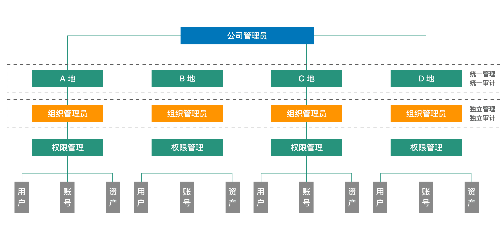

苏州阿特斯阳光电力科技有限公司（以下简称为阿特斯）是一家集太阳能光伏组件制造和为全球客户提供太阳能应用产品研发、设计、制造、销售的专业公司。
阿特斯集团总部位于加拿大，中国区总部位于江苏省苏州市。通过全球战略和多元化的市场布局，阿特斯目前在全球150个国家和地区建立了分支机构，是全球综合实力领先的太阳能光伏发电整体解决方案提供商。
系统运维痛点和需求
业务的迅速发展给阿特斯IT系统的日常运维管理工作带来了很多问题和挑战，可以简单概括为以下几个方面：
1. 服务器管理模式需要转变
原先阿特斯各个基地的服务器都是由各个基地进行独立管理的，这种分散式的管理方式效率低，且难以形成统一的管理标准和规范。为了提升管理效率，确保服务器的稳定性和安全性，阿特斯希望将各个基地的服务器管理工作收归集团总部进行统一管理；
2. 账密管理混乱，存在安全隐患
过去阿特斯各事业部的账号和密码设置缺乏统一标准，导致登录账号密码的管理比较混乱。此外，生产系统登录权限的管理也相对松散，没有严格的审批流程和监控机制。任何人都可以随意登录系统，这样的登录方式给系统的安全性带来了威胁。
阿特斯希望通过引入堡垒机来解决这一问题，建立严格的登录审批制度和监控机制，确保只有经过授权的人员才能登录到指定系统；
3. 需要满足审计要求，实现合规运营
随着业务的发展和监管要求的日益严格，阿特斯现有的服务器和登录管理方式已经无法满足审计的相关要求，并且缺乏统一的审计标准和流程。阿特斯希望可以在公司内部建立完善的审计制度与审计流程，确保日常操作符合相关法规和审计的要求。
堡垒机选型思路
阿特斯的运维管理员在多年前就已经接触并使用了JumpServer堡垒机开源版，对JumpServer简洁直观的用户界面和能够快速上手的操作流程印象深刻。同时，JumpServer在账号管理、权限分配，以及日志审计等方面的功能性都非常符合公司日常运维管理的需要。除此之外，JumpServer还是一款按月迭代的产品，以非常快的速度持续改进。
伴随着业务规模的扩大，阿特斯逐渐意识到传统集中式堡垒机在性能上的局限性。尤其是在多事业部、多节点的场景下，传统堡垒机往往会因为文件传输和登录操作的延迟而带来不好的用户体验。为此，阿特斯开始考察能够支持分布式部署的堡垒机。
在国内市场上，能够提供分布式堡垒机解决方案的厂商并不多，经过多轮筛选和测试，阿特斯的运维团队发现JumpServer堡垒机可以很好地满足公司分布式管理的需求。
在选型过程中，阿特斯的运维团队尤为关注堡垒机一键式脚本部署的功能和运维的便利性。对于非专业的运维人员来说，复杂的部署和运维流程无疑会增加工作负担。因此，阿特斯更倾向于选择那些能够提供一键式脚本部署和简单运维操作的堡垒机产品。JumpServer可以很好地满足这些需求，其一键式脚本部署功能可以快速完成安装工作，简单的运维操作界面能够帮助用户在日常的工作中节省大量的时间和精力。
JumpServer的架构设计
阿特斯根据生产环境的实际需求，选择了分布式架构的部署方案，希望能够高效管理其庞大且分散的IT资产。每个事业部都配备了与其业务需求相互匹配的登录入口，各个事业部的用户通过各自专属的入口进行登录操作。这样的堡垒机部署架构不仅提升了系统的灵活性和可扩展性，还有效降低了用户在进行各项操作时可能面临的延迟问题。
另外，定制化的访问入口设计，使得用户的请求能够更直接地传输到负责处理该请求的服务节点上。同时，分布式的部署架构通过负载均衡机制，智能分配请求至负载较轻的服务器上进行处理，进一步缩短了响应时间。即便是在高并发访问的情况下，也能保持系统的流畅运行。

▲图1 阿特斯JumpServer架构设计需要强调的是，借助JumpServer的多组织管理功能，每个事业部的用户和资产实现了有效隔离，避免了因误操作或权限管理不当所导致的敏感信息泄露风险。每个组织都可以实施更为精细化的权限控制策略，确保只有被授权的用户才能访问特定资源，从而增强了系统整体的安全性。
▲图2 阿特斯JumpServer多组织管理架构
JumpServer的功能亮点
在日常运维工作中，阿特斯的运维团队对JumpServer的一些特色功能给予了很高的评价：
1. 多组织管理
在分布式部署架构中，阿特斯各个事业部享有高度的自治权，由其各自指定的管理员负责日常的运营与维护工作。这种多组织的管理方式不仅提高了工作效率，还增强了组织的灵活性和响应速度。
与此同时，总部的系统具备强大的组织切换功能，能够轻松实现对各分节点堡垒机配置的全面监控与审查。无论是查看实时系统状态、调整安全策略，还是进行故障排查与性能优化，总部都能够迅速切换至对应的组织，获取详尽的配置信息。这种便捷性极大地提升了公司整体系统的管理效率和安全性；
2. 远程应用
用户可以自助式地通过JumpServer访问远程应用，通过客户端或者Web端进行远程应用访问，无需在本地环境安装相关客户端，只需要通过JumpServer的用户认证体系，就可以直接实现连接；
3. 命令过滤
针对用户可能因为不熟悉系统或误操作而引发安全风险的问题，阿特斯通过JumpServer制定了严格的危险命令限制策略。通过智能识别与命令拦截机制，JumpServer可以自动阻止用户执行危险命令。这样一来，就显著降低了因误操作导致的系统故障和数据丢失风险，为用户提供一个更加安全可靠的操作环境。
JumpServer带来的价值收益
JumpServer堡垒机在阿特斯集团内应用落地后，为其带来了一系列的价值收益。
首先是满足安全审计要求方面。通过集成日志记录与分析能力，JumpServer堡垒机能够详细记录每一次用户登录访问、操作行为以及系统状态变化等关键信息，为公司后续的审计和合规性检查提供了坚实的数据支撑。JumpServer全面的审计能力不仅有助于及时发现潜在的安全漏洞和违规操作，还能在发生安全事件时提供准确的追溯依据，确保企业能够迅速响应并采取相应的补救措施。
其次是有效降低了系统安全运维的风险。JumpServer严格的权限划分和审核机制，能够有效避免因权限过大而导致的潜在安全威胁，例如数据泄露、系统破坏等。这种精细化的管理方式在保证系统整体安全性的同时，还有助于明确用户之间的职责，并提高协作效率。
最后是系统运维管理与协作效率的整体提升。 JumpServer为阿特斯各事业部提供了一套统一且易于操作的授权管理系统，确保了授权管理的规范性和准确性，同时减少了总部在授权审核、权限调整等方面的直接参与。这样一来，不仅大大降低了总部的运维管理压力，还促进了各基地之间的信息共享和协同工作，整个组织的运营效率显著提升。